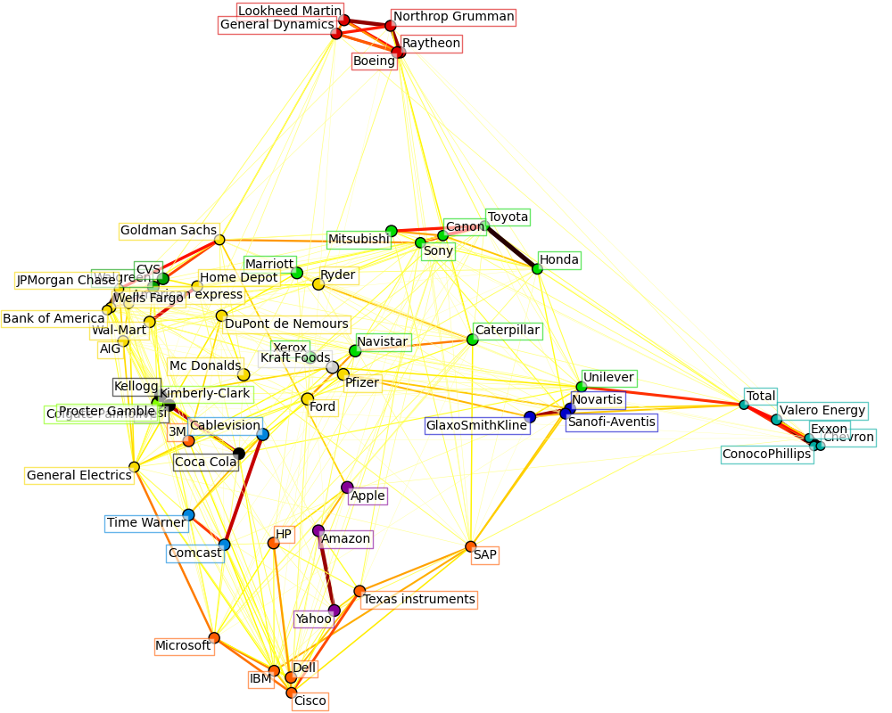

Visualizing the stock market structure¶
This example employs several unsupervised learning techniques to extract the stock market structure from variations in historical quotes.
The quantity that we use is the daily variation in quote price: quotes that are linked tend to cofluctuate during a day.
Learning a graph structure¶
We use sparse inverse covariance estimation to find which quotes are correlated conditionally on the others. Specifically, sparse inverse covariance gives us a graph, that is a list of connection. For each symbol, the symbols that it is connected too are those useful to explain its fluctuations.
Clustering¶
We use clustering to group together quotes that behave similarly. Here, amongst the various clustering techniques available in the scikit-learn, we use Affinity Propagation as it does not enforce equal-size clusters, and it can choose automatically the number of clusters from the data.
Note that this gives us a different indication than the graph, as the graph reflects conditional relations between variables, while the clustering reflects marginal properties: variables clustered together can be considered as having a similar impact at the level of the full stock market.
Embedding in 2D space¶
For visualization purposes, we need to lay out the different symbols on a 2D canvas. For this we use Manifold learning techniques to retrieve 2D embedding.
Visualization¶
The output of the 3 models are combined in a 2D graph where nodes represents the stocks and edges the:
- cluster labels are used to define the color of the nodes
- the sparse covariance model is used to display the strength of the edges
- the 2D embedding is used to position the nodes in the plan
This example has a fair amount of visualization-related code, as visualization is crucial here to display the graph. One of the challenge is to position the labels minimizing overlap. For this we use an heuristic based on the direction of the nearest neighbor along each axis.
Script output:
Cluster 1: Pepsi, Coca Cola, Kellogg
Cluster 2: Apple, Amazon, Yahoo
Cluster 3: GlaxoSmithKline, Novartis, Sanofi-Aventis
Cluster 4: Comcast, Time Warner, Cablevision
Cluster 5: ConocoPhillips, Chevron, Total, Valero Energy, Exxon
Cluster 6: Walgreen, CVS
Cluster 7: Navistar, Sony, Marriott, Caterpillar, Canon, Toyota, Honda, Mitsubishi, Xerox, Unilever
Cluster 8: Kimberly-Clark, Colgate-Palmolive, Procter Gamble
Cluster 9: American express, Ryder, Goldman Sachs, Wal-Mart, General Electrics, Pfizer, Wells Fargo, DuPont de Nemours, Bank of America, AIG, Home Depot, Ford, JPMorgan Chase, Mc Donalds
Cluster 10: Microsoft, SAP, 3M, IBM, Texas instruments, HP, Dell, Cisco
Cluster 11: Raytheon, Boeing, Lookheed Martin, General Dynamics, Northrop Grumman
Cluster 12: Kraft Foods
Python source code: plot_stock_market.py
print(__doc__)
# Author: Gael Varoquaux gael.varoquaux@normalesup.org
# License: BSD 3 clause
import datetime
import numpy as np
import pylab as pl
from matplotlib import finance
from matplotlib.collections import LineCollection
from sklearn import cluster, covariance, manifold
###############################################################################
# Retrieve the data from Internet
# Choose a time period reasonnably calm (not too long ago so that we get
# high-tech firms, and before the 2008 crash)
d1 = datetime.datetime(2003, 1, 1)
d2 = datetime.datetime(2008, 1, 1)
# kraft symbol has now changed from KFT to MDLZ in yahoo
symbol_dict = {
'TOT': 'Total',
'XOM': 'Exxon',
'CVX': 'Chevron',
'COP': 'ConocoPhillips',
'VLO': 'Valero Energy',
'MSFT': 'Microsoft',
'IBM': 'IBM',
'TWX': 'Time Warner',
'CMCSA': 'Comcast',
'CVC': 'Cablevision',
'YHOO': 'Yahoo',
'DELL': 'Dell',
'HPQ': 'HP',
'AMZN': 'Amazon',
'TM': 'Toyota',
'CAJ': 'Canon',
'MTU': 'Mitsubishi',
'SNE': 'Sony',
'F': 'Ford',
'HMC': 'Honda',
'NAV': 'Navistar',
'NOC': 'Northrop Grumman',
'BA': 'Boeing',
'KO': 'Coca Cola',
'MMM': '3M',
'MCD': 'Mc Donalds',
'PEP': 'Pepsi',
'MDLZ': 'Kraft Foods',
'K': 'Kellogg',
'UN': 'Unilever',
'MAR': 'Marriott',
'PG': 'Procter Gamble',
'CL': 'Colgate-Palmolive',
'GE': 'General Electrics',
'WFC': 'Wells Fargo',
'JPM': 'JPMorgan Chase',
'AIG': 'AIG',
'AXP': 'American express',
'BAC': 'Bank of America',
'GS': 'Goldman Sachs',
'AAPL': 'Apple',
'SAP': 'SAP',
'CSCO': 'Cisco',
'TXN': 'Texas instruments',
'XRX': 'Xerox',
'LMT': 'Lookheed Martin',
'WMT': 'Wal-Mart',
'WAG': 'Walgreen',
'HD': 'Home Depot',
'GSK': 'GlaxoSmithKline',
'PFE': 'Pfizer',
'SNY': 'Sanofi-Aventis',
'NVS': 'Novartis',
'KMB': 'Kimberly-Clark',
'R': 'Ryder',
'GD': 'General Dynamics',
'RTN': 'Raytheon',
'CVS': 'CVS',
'CAT': 'Caterpillar',
'DD': 'DuPont de Nemours'}
symbols, names = np.array(list(symbol_dict.items())).T
quotes = [finance.quotes_historical_yahoo(symbol, d1, d2, asobject=True)
for symbol in symbols]
open = np.array([q.open for q in quotes]).astype(np.float)
close = np.array([q.close for q in quotes]).astype(np.float)
# The daily variations of the quotes are what carry most information
variation = close - open
###############################################################################
# Learn a graphical structure from the correlations
edge_model = covariance.GraphLassoCV()
# standardize the time series: using correlations rather than covariance
# is more efficient for structure recovery
X = variation.copy().T
X /= X.std(axis=0)
edge_model.fit(X)
###############################################################################
# Cluster using affinity propagation
_, labels = cluster.affinity_propagation(edge_model.covariance_)
n_labels = labels.max()
for i in range(n_labels + 1):
print('Cluster %i: %s' % ((i + 1), ', '.join(names[labels == i])))
###############################################################################
# Find a low-dimension embedding for visualization: find the best position of
# the nodes (the stocks) on a 2D plane
# We use a dense eigen_solver to achieve reproducibility (arpack is
# initiated with random vectors that we don't control). In addition, we
# use a large number of neighbors to capture the large-scale structure.
node_position_model = manifold.LocallyLinearEmbedding(
n_components=2, eigen_solver='dense', n_neighbors=6)
embedding = node_position_model.fit_transform(X.T).T
###############################################################################
# Visualization
pl.figure(1, facecolor='w', figsize=(10, 8))
pl.clf()
ax = pl.axes([0., 0., 1., 1.])
pl.axis('off')
# Display a graph of the partial correlations
partial_correlations = edge_model.precision_.copy()
d = 1 / np.sqrt(np.diag(partial_correlations))
partial_correlations *= d
partial_correlations *= d[:, np.newaxis]
non_zero = (np.abs(np.triu(partial_correlations, k=1)) > 0.02)
# Plot the nodes using the coordinates of our embedding
pl.scatter(embedding[0], embedding[1], s=100 * d ** 2, c=labels,
cmap=pl.cm.spectral)
# Plot the edges
start_idx, end_idx = np.where(non_zero)
#a sequence of (*line0*, *line1*, *line2*), where::
# linen = (x0, y0), (x1, y1), ... (xm, ym)
segments = [[embedding[:, start], embedding[:, stop]]
for start, stop in zip(start_idx, end_idx)]
values = np.abs(partial_correlations[non_zero])
lc = LineCollection(segments,
zorder=0, cmap=pl.cm.hot_r,
norm=pl.Normalize(0, .7 * values.max()))
lc.set_array(values)
lc.set_linewidths(15 * values)
ax.add_collection(lc)
# Add a label to each node. The challenge here is that we want to
# position the labels to avoid overlap with other labels
for index, (name, label, (x, y)) in enumerate(
zip(names, labels, embedding.T)):
dx = x - embedding[0]
dx[index] = 1
dy = y - embedding[1]
dy[index] = 1
this_dx = dx[np.argmin(np.abs(dy))]
this_dy = dy[np.argmin(np.abs(dx))]
if this_dx > 0:
horizontalalignment = 'left'
x = x + .002
else:
horizontalalignment = 'right'
x = x - .002
if this_dy > 0:
verticalalignment = 'bottom'
y = y + .002
else:
verticalalignment = 'top'
y = y - .002
pl.text(x, y, name, size=10,
horizontalalignment=horizontalalignment,
verticalalignment=verticalalignment,
bbox=dict(facecolor='w',
edgecolor=pl.cm.spectral(label / float(n_labels)),
alpha=.6))
pl.xlim(embedding[0].min() - .15 * embedding[0].ptp(),
embedding[0].max() + .10 * embedding[0].ptp(),)
pl.ylim(embedding[1].min() - .03 * embedding[1].ptp(),
embedding[1].max() + .03 * embedding[1].ptp())
pl.show()
Total running time of the example: 18.55 seconds ( 0 minutes 18.55 seconds)